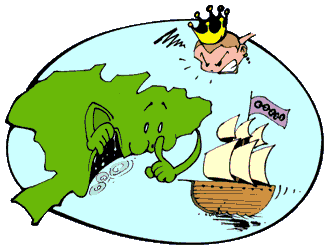

lei para inglês ver
O Brasil, sob pressão internacional, principalmente do governo britânico, e preocupado em atender aos próprios interesses enquanto mantinha práticas escravistas, promulgou a "Lei Para Inglês Ver". Essa legislação, aparentemente voltada para a abolição da escravidão, proibia o tráfico à primeira vista. No entanto, essa lei funcionava simplesmente como uma fachada para a percepção internacional, fazendo com que acreditassem que as autoridades brasileiras estavam promulgando leis efetivas que proibiam e restringiam o tráfico.
Portanto, a expressão "lei para inglês ver" é emblemática do comportamento adotado pelas autoridades brasileiras em relação à abolição do tráfico de escravos. Essas leis eram mais um meio de atender às expectativas internacionais do que uma verdadeira iniciativa para eliminar as práticas escravistas.
Independencia ou Morte
O Brasil não é mais uma colônia de Portugal. Houve numerosas tensões políticas entre as autoridades portuguesas e a elite brasileira. Dom Pedro I, que exercia a regência do Brasil em nome de seu pai, recebeu informações de que Portugal planejava recolonizar o Brasil e retirar os poderes do príncipe. Diante dessa ameaça, Dom Pedro I decidiu romper com Portugal. Num gesto simbólico às margens do rio Ipiranga, proclamou a independência, dando início ao processo de separação do Brasil de Portugal.
Nova Constituição
A primeira Constituição do Brasil independente foi promulgada. Ela foi elaborada pela assembleia constituinte convocada por Dom Pedro I. A Constituição foi imposta ao país sem passar por um processo de votação popular. Estabeleceu um regime monárquico e centralizado, conferindo amplos poderes ao imperador, incluindo a capacidade de nomear senadores, membros do Conselho de Estado e ministros. Além disso, a Constituição também continha restrições, como a exigência de renda mínima para votar, limitando a participação política da maioria da população. O poder foi fortemente centralizado nas mãos do imperador, o que gerou insatisfações e conflitos políticos. A Constituição marcou o início da busca por uma ordem constitucional no país independente.